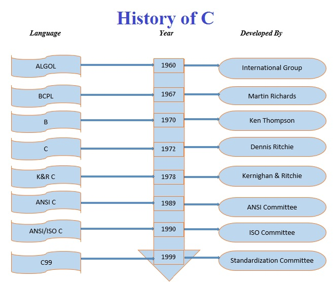

Topics
History of C
History of "C" language is very interesting.Here we discuss a brief history of it.
 "C" was developed to be used in Unix operating system.
"C" was developed to be used in Unix operating system.
It was developed by "Dennis Ritchie" in 1972 at T-bell laboratory.
It was developed to overcome the problems of some previous languages like:- ALGOL,BCPL and B etc.
It uses many features of previous languages.
Let's see the history of C by a picture: -

Note: -1
ALGOL Stands for "Algorithmic Language".
Note: -2
BCPL stands for "Basic Combined Programming Language".
Note: -3
ANSI stands for "American National Standards Institute".
Note: -4
ISO stands for "International Standards Organization".